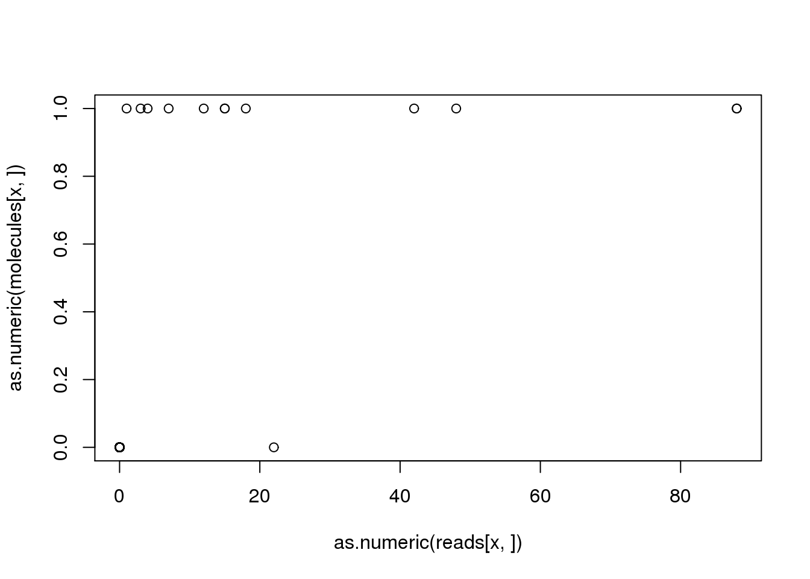
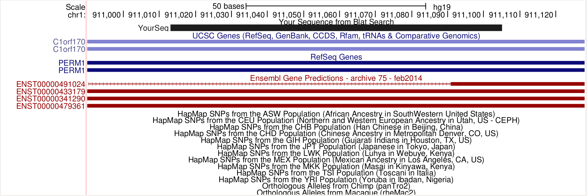
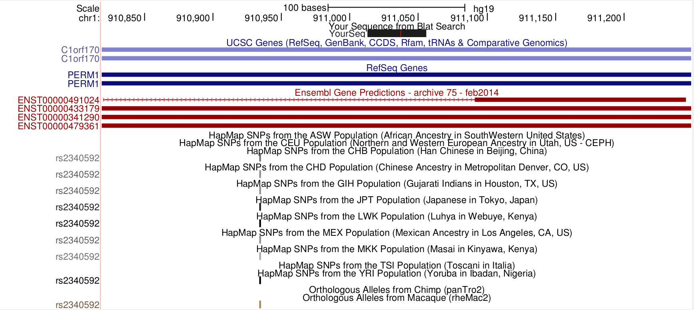
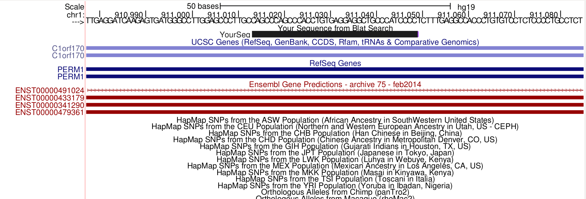

Last updated: 2016-02-18
Code version: 4552abe3b660e2153f2b995df56c8f48b825a67d
We expect that any genes with at least one read will have at least one molecule. Conversely, any gene with zero reads should have zero molecules. There are a small number of instances where these relationships do not hold. This anaysis tracks down this bug in the sequence processsing pipeline.
Input annotation.
anno <- read.table("../data/annotation.txt", header = TRUE,
stringsAsFactors = FALSE)Input read counts.
reads <- read.table("../data/reads.txt", header = TRUE,
stringsAsFactors = FALSE)
stopifnot(ncol(reads) == nrow(anno),
colnames(reads) == anno$sample_id)Input molecule counts.
molecules <- read.table("../data/molecules.txt", header = TRUE,
stringsAsFactors = FALSE)
stopifnot(ncol(molecules) == nrow(anno),
colnames(molecules) == anno$sample_id)How often is this a problem? How many genes does it affect? For affected genes, how many samples are affected?
discordant_zeros <- (reads == 0) != (molecules == 0)
all_genes <- rowSums(discordant_zeros)
names(all_genes) <- rownames(reads)
problem_genes <- all_genes[all_genes > 0]
length(problem_genes)[1] 1347length(problem_genes) / length(all_genes)[1] 0.07951594summary(problem_genes) Min. 1st Qu. Median Mean 3rd Qu. Max.
1.000 1.000 1.000 3.334 2.000 206.000 This problem affects 1347 out of the 16940 total genes (7.95%). For these problem genes, the median number of affected samples is 1. However, there is a long tail, with the max number of sample affected being 206.
Next I identify a problem gene-sample combination so that I can track down what happened.
x <- names(problem_genes)[1]
plot(as.numeric(reads[x, ]), as.numeric(molecules[x, ]))
problem_sample <- colnames(reads)[discordant_zeros[x, ] == TRUE]
reads[x, problem_sample][1] 22molecules[x, problem_sample][1] 0For gene ENSG00000187583, the sample NA19098.r1.G11 was assigned 22 reads but 0 molecules. What happened?
Now I am going to search for the bug by inspecting the intermediate data files from the sequence processsing pipeline.
The following chunks are all Bash commands run from the data directory.
opts_chunk$set(engine = "bash")
opts_knit$set(root.dir = "/mnt/gluster/home/jdblischak/ssd")Strange things are happening at the featureCounts step:
# reads per lane
grep ENSG00000187583 counts/19098.1.G11*trim.sickle.sorted.genecounts.txt | cut -f1,7counts/19098.1.G11.GGCAGACT.L002.R1.C6WYKACXX.trim.sickle.sorted.genecounts.txt:ENSG00000187583 6
counts/19098.1.G11.GGCAGACT.L003.R1.C6WURACXX.trim.sickle.sorted.genecounts.txt:ENSG00000187583 4
counts/19098.1.G11.GGCAGACT.L006.R1.C723YACXX.trim.sickle.sorted.genecounts.txt:ENSG00000187583 12# molecules per lane
grep ENSG00000187583 counts/19098.1.G11*trim.sickle.sorted.rmdup.genecounts.txt | cut -f1,7counts/19098.1.G11.GGCAGACT.L002.R1.C6WYKACXX.trim.sickle.sorted.rmdup.genecounts.txt:ENSG00000187583 1
counts/19098.1.G11.GGCAGACT.L003.R1.C6WURACXX.trim.sickle.sorted.rmdup.genecounts.txt:ENSG00000187583 0
counts/19098.1.G11.GGCAGACT.L006.R1.C723YACXX.trim.sickle.sorted.rmdup.genecounts.txt:ENSG00000187583 1# molecules per sample
grep ENSG00000187583 counts/19098.1.G11.trim.sickle.sorted.combined.rmdup.genecounts.txt | cut -f1,7ENSG00000187583 0So for two of the per lane reads files, they get reduced to one molecule each. This seems reasonable. But one gets reduced to zero! And the combined file also contains zero. What is happening to these reads? Searching the featureCounts assignments (-R flag).
First investigating the lane that was reduced from 6 reads to 1 molecule.
# reads per lane
grep ENSG00000187583 counts/19098.1.G11.GGCAGACT.L002.R1.C6WYKACXX.trim.sickle.sorted.bam.featureCountsHWI-700819F:303:C6WYKACXX:2:1311:13724:70217:UMI_AGAAGGGG Assigned ENSG00000187583 *
HWI-700819F:303:C6WYKACXX:2:2114:18388:14175:UMI_AGAAGGGG Assigned ENSG00000187583 *
HWI-700819F:303:C6WYKACXX:2:2214:2454:36975:UMI_AGAAGGGG Assigned ENSG00000187583 *
HWI-700819F:303:C6WYKACXX:2:2214:13077:41687:UMI_AGAAGGGG Assigned ENSG00000187583 *
HWI-700819F:303:C6WYKACXX:2:2312:13148:100643:UMI_AGAAGGGG Assigned ENSG00000187583 *
HWI-700819F:303:C6WYKACXX:2:2314:4367:3532:UMI_AGAAGGGG Assigned ENSG00000187583 *As expected, there are 6 reads. Also they all clearly have the same UMI sequence, so it makes sense they are reduced to one molecule.
# molecules per lane
grep ENSG00000187583 counts/19098.1.G11.GGCAGACT.L002.R1.C6WYKACXX.trim.sickle.sorted.rmdup.bam.featureCountsHWI-700819F:303:C6WYKACXX:2:2114:18388:14175:UMI_AGAAGGGG Assigned ENSG00000187583 *Wonderful. Only one of the reads from that lane is assigned as a molecule.
Next the lane that was reduced from 12 reads to 1 molecule.
# reads per lane
grep ENSG00000187583 counts/19098.1.G11.GGCAGACT.L006.R1.C723YACXX.trim.sickle.sorted.bam.featureCountsHWI-700819F:305:C723YACXX:6:1111:8035:48471:UMI_AGAAGGGG Assigned ENSG00000187583 *
HWI-700819F:305:C723YACXX:6:1113:6618:42326:UMI_AGAAGGGG Assigned ENSG00000187583 *
HWI-700819F:305:C723YACXX:6:1114:6879:12369:UMI_AGAAGGGG Assigned ENSG00000187583 *
HWI-700819F:305:C723YACXX:6:1208:12206:62466:UMI_AGAAGGGG Assigned ENSG00000187583 *
HWI-700819F:305:C723YACXX:6:1210:14240:43340:UMI_AGAAGGGG Assigned ENSG00000187583 *
HWI-700819F:305:C723YACXX:6:1311:4828:8532:UMI_AGAAGGGG Assigned ENSG00000187583 *
HWI-700819F:305:C723YACXX:6:2110:20427:91561:UMI_AGAAGGGG Assigned ENSG00000187583 *
HWI-700819F:305:C723YACXX:6:2111:18585:18781:UMI_AGAAGGGG Assigned ENSG00000187583 *
HWI-700819F:305:C723YACXX:6:2112:12505:22635:UMI_AGAAGGGG Assigned ENSG00000187583 *
HWI-700819F:305:C723YACXX:6:2215:1185:41439:UMI_AGAAGGGG Assigned ENSG00000187583 *
HWI-700819F:305:C723YACXX:6:2303:9085:61288:UMI_AGAAGGGG Assigned ENSG00000187583 *
HWI-700819F:305:C723YACXX:6:2311:11357:44914:UMI_AGAAGGGG Assigned ENSG00000187583 *Similarly, all reads in this lane have the same UMI sequence. Furthermore, it is the same UMI as in the other lane, so these are likely are originating from the same original molecule.
# molecules per lane
grep ENSG00000187583 counts/19098.1.G11.GGCAGACT.L006.R1.C723YACXX.trim.sickle.sorted.rmdup.bam.featureCountsHWI-700819F:305:C723YACXX:6:2215:1185:41439:UMI_AGAAGGGG Assigned ENSG00000187583 *Now for the problem lane. There were 4 reads, but zero molecules.
# reads per lane
grep ENSG00000187583 counts/19098.1.G11.GGCAGACT.L003.R1.C6WURACXX.trim.sickle.sorted.bam.featureCountsHWI-700819F:304:C6WURACXX:3:1110:14216:42424:UMI_AGAAGGGG Assigned ENSG00000187583 *
HWI-700819F:304:C6WURACXX:3:1204:19248:93197:UMI_AGAAGGGG Assigned ENSG00000187583 *
HWI-700819F:304:C6WURACXX:3:1210:7316:85169:UMI_AGAAGGGG Assigned ENSG00000187583 *
HWI-700819F:304:C6WURACXX:3:1306:14259:83216:UMI_AGAAGGGG Assigned ENSG00000187583 *Once again the same UMI sequence!
# molecules per lane
grep ENSG00000187583 counts/19098.1.G11.GGCAGACT.L003.R1.C6WURACXX.trim.sickle.sorted.rmdup.bam.featureCounts
# I have to add the following to change the exit status. When grep does not find
# a match, its exit status is 1. Since this is an error exit status, knitr
# assumes something has failed and stops execution.
exit 0But no molecules! What could have possibly gone wrong only for this lane!
So where were these reads lost? Here are the problem reads.
grep ENSG00000187583 counts/19098.1.G11.GGCAGACT.L003.R1.C6WURACXX.trim.sickle.sorted.bam.featureCounts | cut -f1HWI-700819F:304:C6WURACXX:3:1110:14216:42424:UMI_AGAAGGGG
HWI-700819F:304:C6WURACXX:3:1204:19248:93197:UMI_AGAAGGGG
HWI-700819F:304:C6WURACXX:3:1210:7316:85169:UMI_AGAAGGGG
HWI-700819F:304:C6WURACXX:3:1306:14259:83216:UMI_AGAAGGGGWas one of these 4 sequences passed to featureCounts, but not assigned for some reason?
grep HWI-700819F:304:C6WURACXX:3:1110:14216:42424:UMI_AGAAGGGG counts/19098.1.G11.GGCAGACT.L003.R1.C6WURACXX.trim.sickle.sorted.rmdup.bam.featureCounts
grep HWI-700819F:304:C6WURACXX:3:1204:19248:93197:UMI_AGAAGGGG counts/19098.1.G11.GGCAGACT.L003.R1.C6WURACXX.trim.sickle.sorted.rmdup.bam.featureCounts
grep HWI-700819F:304:C6WURACXX:3:1210:7316:85169:UMI_AGAAGGGG counts/19098.1.G11.GGCAGACT.L003.R1.C6WURACXX.trim.sickle.sorted.rmdup.bam.featureCounts
grep HWI-700819F:304:C6WURACXX:3:1306:14259:83216:UMI_AGAAGGGG counts/19098.1.G11.GGCAGACT.L003.R1.C6WURACXX.trim.sickle.sorted.rmdup.bam.featureCounts
exit 0No, that is not the reason. I expected to see 1 of the 4 reads, but featureCounts does not report having seen any of these reads.
Are any of these 4 reads in the molecules bam file, i.e. “rmdup”? These are the output files from the step to remove duplicate reads (i.e. convert reads to molecules).
samtools view bam-rmdup-umi/19098.1.G11.GGCAGACT.L003.R1.C6WURACXX.trim.sickle.sorted.rmdup.bam | grep HWI-700819F:304:C6WURACXX:3:1110:14216:42424:UMI_AGAAGGGG
samtools view bam-rmdup-umi/19098.1.G11.GGCAGACT.L003.R1.C6WURACXX.trim.sickle.sorted.rmdup.bam | grep HWI-700819F:304:C6WURACXX:3:1204:19248:93197:UMI_AGAAGGGG
samtools view bam-rmdup-umi/19098.1.G11.GGCAGACT.L003.R1.C6WURACXX.trim.sickle.sorted.rmdup.bam | grep HWI-700819F:304:C6WURACXX:3:1210:7316:85169:UMI_AGAAGGGG
samtools view bam-rmdup-umi/19098.1.G11.GGCAGACT.L003.R1.C6WURACXX.trim.sickle.sorted.rmdup.bam | grep HWI-700819F:304:C6WURACXX:3:1306:14259:83216:UMI_AGAAGGGG
exit 0So it is clear that featureCounts is not the problem. The input molecule bam file did not contain them.
Next possibility is that it was lost in the reads to molecule conversion step using UMI-tools dedup_umi.py. The input files for this step are in bam-processed.
samtools view bam-processed/19098.1.G11.GGCAGACT.L003.R1.C6WURACXX.trim.sickle.sorted.bam | grep HWI-700819F:304:C6WURACXX:3:1110:14216:42424:UMI_AGAAGGGGHWI-700819F:304:C6WURACXX:3:1110:14216:42424:UMI_AGAAGGGG 0 chr1 911014 59 92M * 0 0 CAGCCCAGCCCACCTGTGAGGAGGCTGCCCATCCCCTCTTTGAGGCCACCCTGTGTCCTCTCCCCTGCCTCTGCCCAGAGCTCCAGCCGGAG FBBFFIFFFFF<FFFBFFFIFIFIFIF'BFFFBFFIBFFFFBFFFFFFFBFBBBFBBFBBBBBBBBBBBBBBBBBB<BBBBBBBB<BB<<7< HI:i:1 NH:i:1 NM:i:0samtools view bam-processed/19098.1.G11.GGCAGACT.L003.R1.C6WURACXX.trim.sickle.sorted.bam | grep HWI-700819F:304:C6WURACXX:3:1204:19248:93197:UMI_AGAAGGGGHWI-700819F:304:C6WURACXX:3:1204:19248:93197:UMI_AGAAGGGG 0 chr1 911014 59 92M * 0 0 CAGCCCAGCCCACCTGTGAGGAGGCTGCCCATCCCCTCTTTGAGGCCACCCTGTGTCCTCTCCCCTGCCTCTGCCCAGAGCTCCAGCCGGAG FFFFFIIIIIIIIIFIFFFIIFIIIIIIFFIIIIIIIIIIIBFFIFFFFFFFFBBBFBBFBFFFFB<BBBFBBBBFBFBBBFFFF<BBFFFF HI:i:1 NH:i:1 NM:i:0samtools view bam-processed/19098.1.G11.GGCAGACT.L003.R1.C6WURACXX.trim.sickle.sorted.bam | grep HWI-700819F:304:C6WURACXX:3:1210:7316:85169:UMI_AGAAGGGGHWI-700819F:304:C6WURACXX:3:1210:7316:85169:UMI_AGAAGGGG 0 chr1 911014 59 81M11S * 0 0 CAGCCCAGCCCACCTGTGAGGAGGCTGCCCATCCCCTCTTTGAGGCCACCCTGTGTCCTCTCCCCTGCCTCTGCCCAGAGCCTGTCTCTTAT FFFFFI<BFFFFFFIIFIIFIIIIFIIIIIIIIIFIIIIIIIIFIFFFFBBFFFFBFFFFFFFFFFBBFBFFFFFFFFFFFFFFFFBFFFBB HI:i:1 NH:i:1 NM:i:0samtools view bam-processed/19098.1.G11.GGCAGACT.L003.R1.C6WURACXX.trim.sickle.sorted.bam | grep HWI-700819F:304:C6WURACXX:3:1306:14259:83216:UMI_AGAAGGGGHWI-700819F:304:C6WURACXX:3:1306:14259:83216:UMI_AGAAGGGG 0 chr1 911014 58 92M * 0 0 CAGCCCACCCCACCTGTGAGGAGGCTGCCCATCCCCTCTTTGAGGCCACCCTGTGTCCTCTCCCCTGCCTCTGCCCAGAGCTCCAGCCGGAG FFFFFIF0BFFFFFIIIIIIIIIIFIBFIIIIIIIIIIIIIFFFFFFFFFFFFBB<BBBFFFFFFF<<BBBBBFFFFBFBFFFFF<BB777< HI:i:1 NH:i:1 NM:i:1They are erased during the remove duplicate step!
Now I want to confirm that all these reads from the 3 lanes are in the combined file. There should be 22 (6 + 4 + 12).
samtools view bam-combined/19098.1.G11.trim.sickle.sorted.combined.bam chr1:911014-911014 -c40That is more than I expected. How many have the exact same UMI sequence?
samtools view bam-combined/19098.1.G11.trim.sickle.sorted.combined.bam chr1:911014-911014 | grep UMI_AGAAGGGG | wc -l40Strange.
samtools view bam-combined/19098.1.G11.trim.sickle.sorted.combined.bam chr1:911014-911014 | grep UMI_AGAAGGGG | cut -f1 | sort | uniq | cut -d":" -f3 | uniq -c 9 C6WYKACXX
13 C6WURACXX
18 C723YACXXSo there are actually more than 22 reads that have the UMI AGAAGGGG and start at chr1:911014, however, only 22 of the 40 get assigned to gene ENSG00000187583.
Could this be a length issue? Since some reads are longer than others due to the quality trimming, perhaps the longer reads intersect an exon from another gene. There is variation in read length.
samtools view bam-combined/19098.1.G11.trim.sickle.sorted.combined.bam chr1:911014-911014 | cut -f6 | sort | uniq -c 1 36M56S
1 40M35S
1 40M52S
3 42M50S
1 43M
1 47M45S
2 51M41S
1 57M35S
1 58M16S
2 62M30S
1 64M28S
1 75M17S
1 75M4S
1 76M16S
2 81M11S
1 84M
19 92MHow many genes are in this locus?
I searched one of the 92M sequences with BLAT, and it does overlap two different Ensembl genes (red). The bottom three Ensembl transcripts (ex) are for the protein_coding gene C1orf170, or ENSG00000187642, and is on the - strand. The transcript on the top is the protein_coding gene PLEKHN1, or ENSG00000187583, and it is on the + strand.
samtools view bam-combined/19098.1.G11.trim.sickle.sorted.combined.bam chr1:911014-911014 | grep 92M | cut -f10 | head -n 1 CAGCCCAGCCCACCTGTGAGGAGGCTGCCCATCCCCTCTTTGAGGCCACCCTGTGTCCTCTCCCCTGCCTCTGCCCAGAGCTCCAGCCGGAG
Next I searched for the smallest fragment, which is 43 bp long. 43M means 43 Match (post).
samtools view bam-combined/19098.1.G11.trim.sickle.sorted.combined.bam chr1:911014-911014 | grep 43M | cut -f10 | head -n 1 CAGCCCAGCCCACCTGTGAGGAGGTTGCCCATCCCCTCTTTGA
It is in the intron of ENSG00000187642 (C1orf170), but it overlaps ENSG00000187583 (PLEKHN1). Maybe it is a strand issue.
These reads are all on the + strand (directions).
# + strand = -F 1x10
samtools view bam-combined/19098.1.G11.trim.sickle.sorted.combined.bam chr1:911014-911014 -F 0x10 | wc -l40# - strand = -f 0x10
samtools view bam-combined/19098.1.G11.trim.sickle.sorted.combined.bam chr1:911014-911014 -f 0x10 | wc -l0Because the reads map to the + strand, they can’t be assigned to ENSG00000187642 (C1orf170). Similarly RefSeq has an extra gene annotation PERM1, but it is also on the - strand.
What is going on with these reads? Maybe a soft clipped read will be informative. Using the 36M56S sequence.
samtools view bam-combined/19098.1.G11.trim.sickle.sorted.combined.bam chr1:911014-911014 | grep 36M56S | cut -f10 | head -n 1 CAGCCCAGCCCACCTGTGAGGAGGCTGCCCATCCCCCTGTCTCTTATACACATCTGACGCGGCAGACTTCGTATGCCGTCTTCTGCTTGAAA
Again, this overlaps nothing. It is also strange that the last 56 bp do not map to this locus at all!
Looking at all the sequences that with this UMI and start position.
samtools view bam-combined/19098.1.G11.trim.sickle.sorted.combined.bam chr1:911014-911014 | cut -f10 | sort | uniq -c 1 CAGCCCACCCCACCTGTGAGGAGGCTGCCCATCCCCTCTTTGAGGCCACCCTGTGTCCTCTCCCCTGCCTCTGCCCAGAGCTCCAGCCGGAG
1 CAGCCCAGCCCACCTGTGAGGAGGCTGCCCAGCCCCTCTTTGCTGTCTCTTATACACATCTGACGCGGCAGACTTCGTATGCCGTCTTCTGC
1 CAGCCCAGCCCACCTGTGAGGAGGCTGCCCATCCCCCTGTCTCTTATACACATCTGACGCGGCAGACTTCGTATGCCGTCTTCTGCTTGAAA
1 CAGCCCAGCCCACCTGTGAGGAGGCTGCCCATCCCCTCCTGTCTCTTATACACATCTGACGCGGCAGACTTCGTATGCCGTCTTCTGCTTGA
1 CAGCCCAGCCCACCTGTGAGGAGGCTGCCCATCCCCTCTTCTGTCTCTTATACACATCTGACGCGGCAGACTTCG
2 CAGCCCAGCCCACCTGTGAGGAGGCTGCCCATCCCCTCTTTGAGGCCACCCCTGTCTCTTATACACATCTGACGCGGCAGACTTCGTATGCC
1 CAGCCCAGCCCACCTGTGAGGAGGCTGCCCATCCCCTCTTTGAGGCCACCCTGTGTCCCTGTCTCTTATACACA
2 CAGCCCAGCCCACCTGTGAGGAGGCTGCCCATCCCCTCTTTGAGGCCACCCTGTGTCCTCTCCCCTGCCTCTGCCCAGAGCCTGTCTCTTAT
1 CAGCCCAGCCCACCTGTGAGGAGGCTGCCCATCCCCTCTTTGAGGCCACCCTGTGTCCTCTCCCCTGCCTCTGCCCAGAGCTCC
18 CAGCCCAGCCCACCTGTGAGGAGGCTGCCCATCCCCTCTTTGAGGCCACCCTGTGTCCTCTCCCCTGCCTCTGCCCAGAGCTCCAGCCGGAG
1 CAGCCCAGCCCACCTGTGAGGAGGCTGCCCATCCCCTCTTTGAGGCCACCCTGTGTCCTCTCCCCTGCCTCTGCCCCTGTCTCTTATACACA
1 CAGCCCAGCCCACCTGTGAGGAGGCTGCCCATCCCCTCTTTGAGGCCACCCTGTGTCCTCTCCCCTGCCTCTGTCTCTT
1 CAGCCCAGCCCACCTGTGAGGAGGCTGCCCATCCCCTCTTTGAGGCCACCCTGTGTCCTCTCCCCTGCCTCTGTCTCTTATACACATCTGAC
1 CAGCCCAGCCCACCTGTGAGGAGGCTGCCCATCCCCTCTTTGAGGCCACCCTGTGTCCTCTCCCTGTCTCTTATACACATCTGACGCGGCAG
2 CAGCCCAGCCCACCTGTGAGGAGGCTGCCCATCCCCTCTTTGAGGCCACCCTGTGTCCTGTCTCTTATACACATCTGACGCGGCAGACTTCG
1 CAGCCCAGCCCACCTGTGAGGAGGCTGCCCATCCCCTCTTTGAGGCCACCCTGTGTCTGTCTCTTATACACATCTGACGCGGCAGACTTCGT
1 CAGCCCAGCCCACCTGTGAGGAGGCTGCCCATCCCCTCTTTGAGGCCTGTCTCTTATACACATCTGACGCGGCAGACTTCGTATGCCGTCTT
2 CAGCCCAGCCCACCTGTGAGGAGGCTGCCCATCCCCTCTTTGCTGTCTCTTATACACATCTGACGCGGCAGACTTCGTATGCCGTCTTCTGC
1 CAGCCCAGCCCACCTGTGAGGAGGTTGCCCATCCCCTCTTTGAWhat a mess! So here is my current interpretation, which is all educated guesses. This molecule arises from some unannotated transcript. This sort of thing happens since most of the genome is transcribed at some low level. The varying in length is due to the fragmentation during the sonication step. The soft clipped reads are due to sequencing of the adapter. Overall there should just be one molecule here, and it shouldn’t map to any gene. featureCounts assigns the longer fragments to ENSG00000187583 (PLEKHN1) because their 3’ end overlaps it. But this makes no sense since the read arose from nowhere. I can fix this in featureCounts using the following option to only map the 5’ end of the sequence.
# Have to use 2>&1 redirection trick because featureCounts only sends its help
# to stderr
featureCounts 2>&1 | grep read2pos -A 2 --read2pos <5:3> Reduce reads to their 5' most base or 3' most base. Read
counting is then performed based on the single base the
read is reduced to.So my current guess is that of those 40 sequences, the one that is kept is one of the shorter ones. Since these do not map to anything, the molecules report zero while the reads report sequences.
But no! There is a 92M sequence in the bam-rmdup-umi file!!!!
samtools view bam-rmdup-umi/19098.1.G11.trim.sickle.sorted.combined.rmdup.bam | grep UMI_AGAAGGGG | grep 911014HWI-700819F:303:C6WYKACXX:2:1311:13724:70217:UMI_AGAAGGGG 0 chr1 911014 59 92M * 0 0 CAGCCCAGCCCACCTGTGAGGAGGCTGCCCATCCCCTCTTTGAGGCCACCCTGTGTCCTCTCCCCTGCCTCTGCCCAGAGCTCCAGCCGGAG FFFFFIIIIIIIIIIIIIIIIIIIIIIIIIIIIIIIIIIIIIIIIFFFFFFFFFFFFFBFBFFFFFBBBFFFFFFFFFFFFFFFFFFBFBBB HI:i:1 NH:i:1 NM:i:0Why wasn’t it assigned to ENSG00000187583 (PLEKHN1) as expected?
grep HWI-700819F:303:C6WYKACXX:2:1311:13724:70217:UMI_AGAAGGGG counts/19098.1.G11.trim.sickle.sorted.combined.rmdup.bam.featureCounts
exit 0For some reason, featureCounts has no record of having processed this read. And this isn’t the only read that is not accounted for.
samtools view -c bam-rmdup-umi/19098.1.G11.trim.sickle.sorted.combined.rmdup.bam140494wc -l counts/19098.1.G11.trim.sickle.sorted.combined.rmdup.bam.featureCounts138771 counts/19098.1.G11.trim.sickle.sorted.combined.rmdup.bam.featureCountsThis is super confusing. For the problem lane, the 4 reads were lost in the remove duplicate step. But for the combined file, the problem is at the featureCounts step.
I really don’t know what is happening here, and I want this molecule removed from the analysis anyways. I’m going to re-run the gene counting with featureCounts uisng the flag --read2pos 5 to remove this problem gene and any others, and then assess the extent of the problem.
sessionInfo()R version 3.2.0 (2015-04-16)
Platform: x86_64-unknown-linux-gnu (64-bit)
locale:
[1] LC_CTYPE=en_US.UTF-8 LC_NUMERIC=C
[3] LC_TIME=en_US.UTF-8 LC_COLLATE=en_US.UTF-8
[5] LC_MONETARY=en_US.UTF-8 LC_MESSAGES=en_US.UTF-8
[7] LC_PAPER=en_US.UTF-8 LC_NAME=C
[9] LC_ADDRESS=C LC_TELEPHONE=C
[11] LC_MEASUREMENT=en_US.UTF-8 LC_IDENTIFICATION=C
attached base packages:
[1] stats graphics grDevices utils datasets methods base
other attached packages:
[1] knitr_1.10.5
loaded via a namespace (and not attached):
[1] httr_0.6.1 magrittr_1.5 formatR_1.2 htmltools_0.2.6
[5] tools_3.2.0 RCurl_1.95-4.6 yaml_2.1.13 codetools_0.2-11
[9] rmarkdown_0.6.1 stringi_0.4-1 digest_0.6.8 stringr_1.0.0
[13] bitops_1.0-6 evaluate_0.7